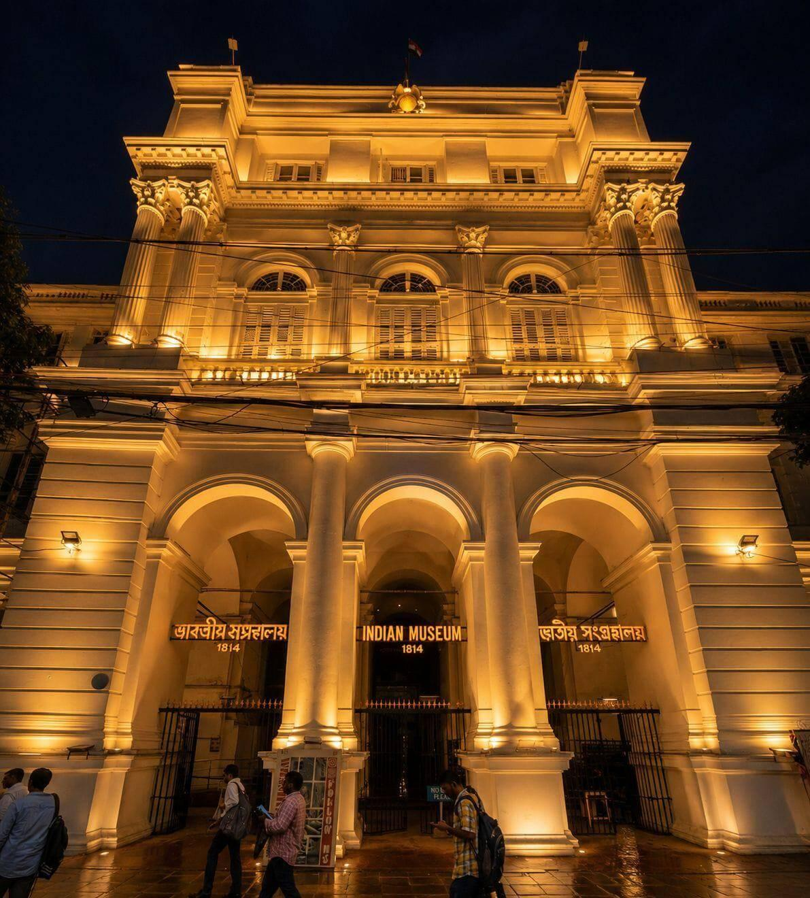

01 / 05
Indian
Museum
⌖ KOLKATA, WEST BENGAL
ABOUT THE MUSEUM
Indian Museum
Founded in 1814 at the cradle of the Asiatic Society of Bengal, the Indian Museum is one of India's earliest and largest multipurpose museums.
The museum preserves archaeology, anthropology, art, coins and historical collections.
COLLECTION HIGHLIGHTS
01
Archaeological Objects
Sculptures and historical
archaeological collections.
02
Ancient Coins
Coins representing different
periods of Indian history.
03
Art & Anthropology
Objects representing India's
cultural diversity.